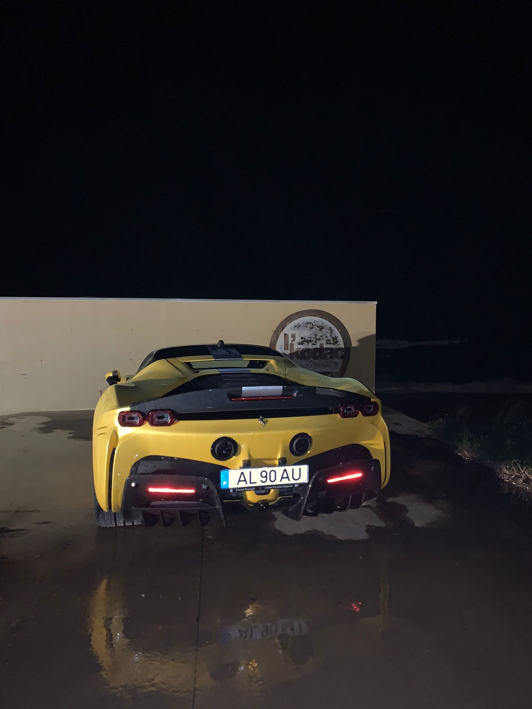

posicionados na frente e na parte traseira do veículo, proporcionando tração nas quatro rodas. 3 | Velocidade e Aceleração : Capaz de acelerar de 0 a 100 km/h em menos de 2.5 segundos, tornando-o um dos carros de
produção mais rápidos já fabricados pela Ferrari. 4 | Design : Apresenta um design aerodinâmico sofisticado, com linhas agressivas e detalhes aerodinâmicos
que maximizam a eficiência e a estabilidade em altas velocidades. 5 | Interior : O interior combina luxo e tecnologia, com materiais de alta qualidade, acabamentos personalizáveis e uma variedade de recursos tecnológicos,
incluindo um painel de instrumentos digital e um sistema de infoentretenimento avançado. 6 | Condução Elétrica: Oferece a capacidade de condução totalmente elétrica em distâncias curtas, proporcionando
uma experiência de condução silenciosa e livre de emissões.
Ferrari SF90 Stradale
O Ferrari SF90 Stradale é um supercarro híbrido plug-in de produção em série fabricado pela Ferrari. Ele foi lançado em 2019 como o primeiro carro de produção em série da Ferrari a ser equipado com um sistema de propulsão híbrido plug-in. Aqui está um resumo das principais características:
1 | Desempenho : Equipado com um motor V8 turbo de 4.0 litros que produz 780 cavalos de potência,
combinado com três motores elétricos, resultando em uma potência total de 1.000 cavalos.
posicionados na frente e na parte traseira do veículo, proporcionando tração nas quatro rodas. 3 | Velocidade e Aceleração : Capaz de acelerar de 0 a 100 km/h em menos de 2.5 segundos, tornando-o um dos carros de
produção mais rápidos já fabricados pela Ferrari. 4 | Design : Apresenta um design aerodinâmico sofisticado, com linhas agressivas e detalhes aerodinâmicos
que maximizam a eficiência e a estabilidade em altas velocidades. 5 | Interior : O interior combina luxo e tecnologia, com materiais de alta qualidade, acabamentos personalizáveis e uma variedade de recursos tecnológicos,
incluindo um painel de instrumentos digital e um sistema de infoentretenimento avançado. 6 | Condução Elétrica: Oferece a capacidade de condução totalmente elétrica em distâncias curtas, proporcionando
uma experiência de condução silenciosa e livre de emissões.